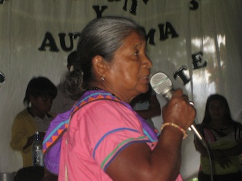
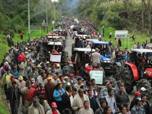

Dear Friends,
Our update from Latin America this month includes news of actions and movements, a reflection on conscience, and a special appeal for you to act.
By Philip McManus
Aware that trouble was brewing, the government human rights ombudsman drove through the night to arrive at Cebror in southern Costa Rica at 6am. Local indigenous were in a tense standoff with an armed group of non-indigenous people (the term preferred in Costa Rica for those who live in or around indigenous territories and are not indigenous). At stake was a property claimed by a non-indigenous family and more recently "recovered" by the local indigenous community. One of the armed group approached the ombudsman: "Look, don't get involved. Give us a half hour, we'll kill five of them, and that'll be the end of it."
Conflict over indigenous territorial claims in Costa Rica has been heated and violent in recent years, with threats, beatings and even deaths. Read more and take action to support indigenous territorial rights in Costa Rica.
Popular opinion in the United States broadly opposes a U.S. military strike against Syria. As it turns out, so do the leaders of South American nations, which include presidents as diverse in their relations with the U.S. as Paraguayan president Horacio Cortés and Venezuela president Nicolás Maduro. The leaders condemned such a strike as "incompatible with the United Nations Charter" and rejected "all types of interventionist strategies." Read more.
By Mabel Durán-Sánchez
Since the beginning of the global economic downturn in 2008 governments around the world have faced protests led by popular movements. Colombian farmers have organized a national strike which has caused major disruptions, with protestors including those cultivating crops like potato, onion, rice, and coffee, as well as dairy and livestock farmers and truck drivers. This set of protests began on August 19 with approximately 200,000 farmers and has gained thousands more supporters. Colombian farmers are on strike demanding better wages and an end to "free trade" agreements with the United States and the European Union. Last week the Santos administration deployed troops in the capital city of Bogotá "to assure normality." Read more.
By Alejandro Parra
On August 21, Bradley Manning (now known as Chelsea Manning), caught in the middle of a politicized legal process and social controversy, was sentenced to 35 years in prison, after receiving extensive media coverage for the nature of his act. Despite this, the discussion of Manning's case in mainstream media and social networks has concentrated on a "military" analysis, focusing on his discharge and sexual orientation. It has left aside a question that should be at the center of the debate and of a proposal to transform military structures throughout the world. Can a soldier really disobey an order, a command, or military law, with the intention of protecting his or her conscience? Read more.
 By Arlene B. Tickner By Arlene B. Tickner
The fact that Secretary of State John Kerry's visit to Colombia [August 11] has gone by almost without notice generates the (false) sensation that Colombia's close association with the United States has past, but Colombia has become a key link in the nervous system of new U.S. security policies. While the strategy of presidents Andrés Pastrana and Álvaro Uribe was "intervention by invitation" - characterized by direct requests that the United States participate in the war on drug trafficking and the guerrillas, given the weakness of the State - the Santos strategy could be called "assistance by proxy." For Colombia, the training of 9,000 Latin American soldiers and police from 2010 and 2012, among other achievements of the exportation of its security model, adds credit to its "story of success." But there are hidden aspects. Read more.
|